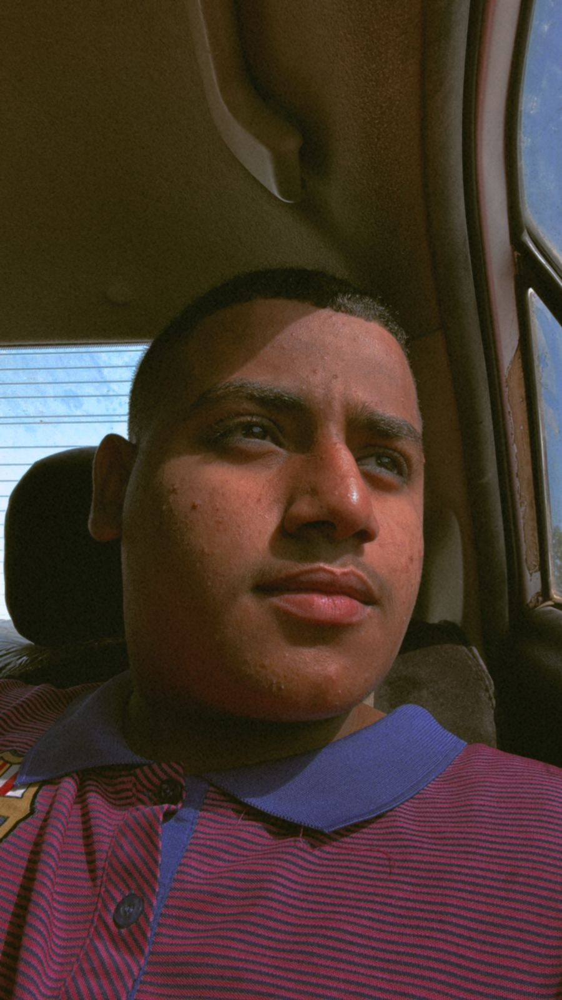

نبذة عن أحمد الأشهل
هو ساحر الكرة الذي ينسج خيوط اللعبة بإبداع:* ليس كل لاعب كرة قدم بحاجة إلى أن يكون صاروخًا سريعًا أو جسدًا نحيلًا. هو مثل "المايسترو" في أوركسترا الفريق، يتحكم بإيقاع المباراة بتمريراته الذكية التي تشبه اللمسات الفنية. كأن الكرة تُطِيعُ أوامر عقله قبل قدميه، فتصل إلى زملائه في التوقيت والمكان المثاليين، حتى لو كان المدافع يُحاول قراءة أفكاره!
